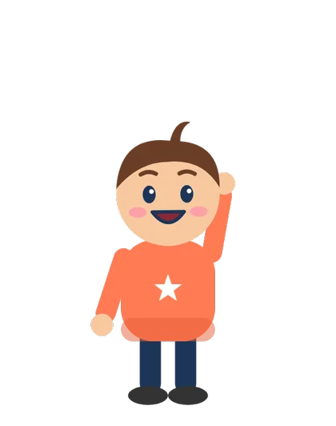
Léo, 7 ans
Le petit frère. Curieux comme tout, il pose toutes les questions… même les plus rigolotes !
Des dessins animés pour les 6–13 ans, avec Léo, Inès… et la voix de Dr Sophie Lefevre, pédiatre depuis 30 ans.
Chaque vidéo est relue par une pédiatre.
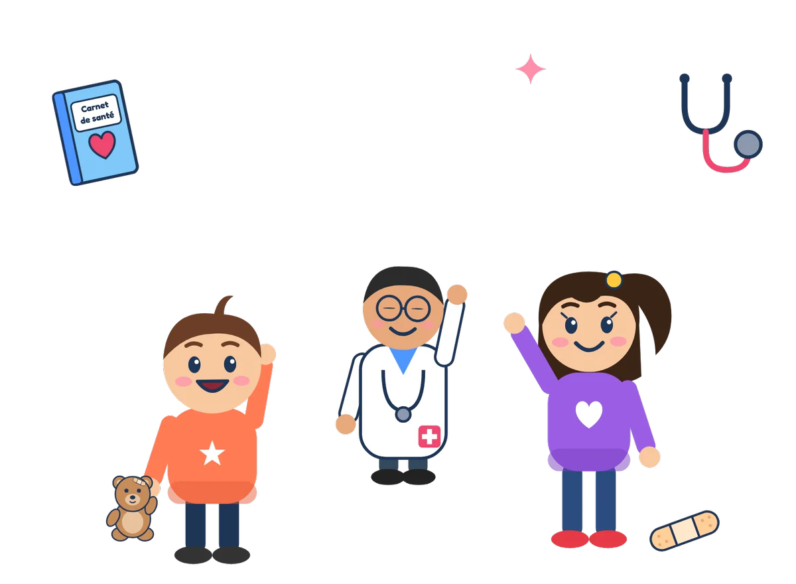
Léo, Inès, le médecin… et la voix de Dr Sophie Lefevre. Six épisodes pour tout comprendre : avant, pendant et après le médecin, les piqûres, les médicaments et les urgences.
Avant, pendant et après la consultation, les piqûres, les médicaments, les urgences : regarde, puis teste-toi avec le quiz de chaque épisode !
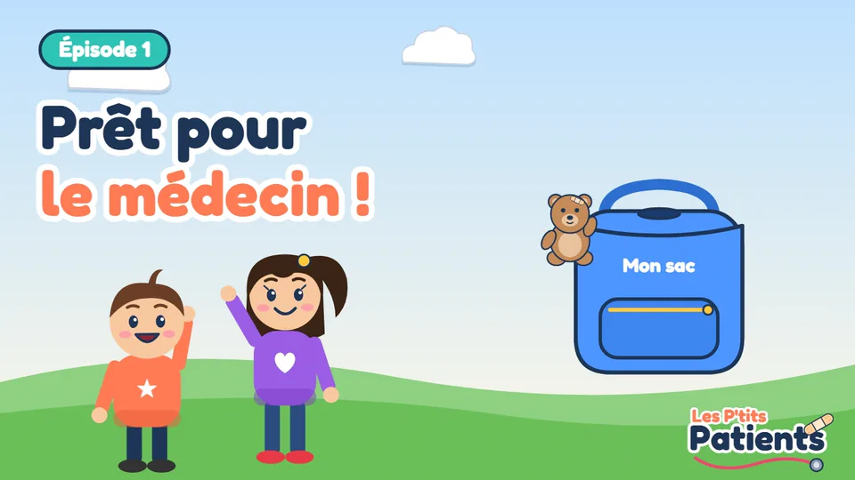
✓ Déjà vuBien se préparer avant la consultation
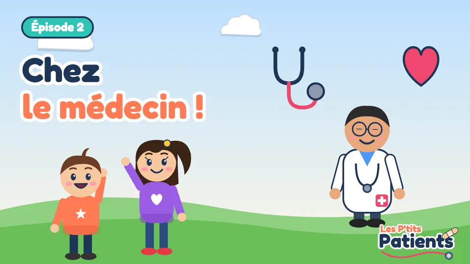
✓ Déjà vuLes instruments du médecin expliqués
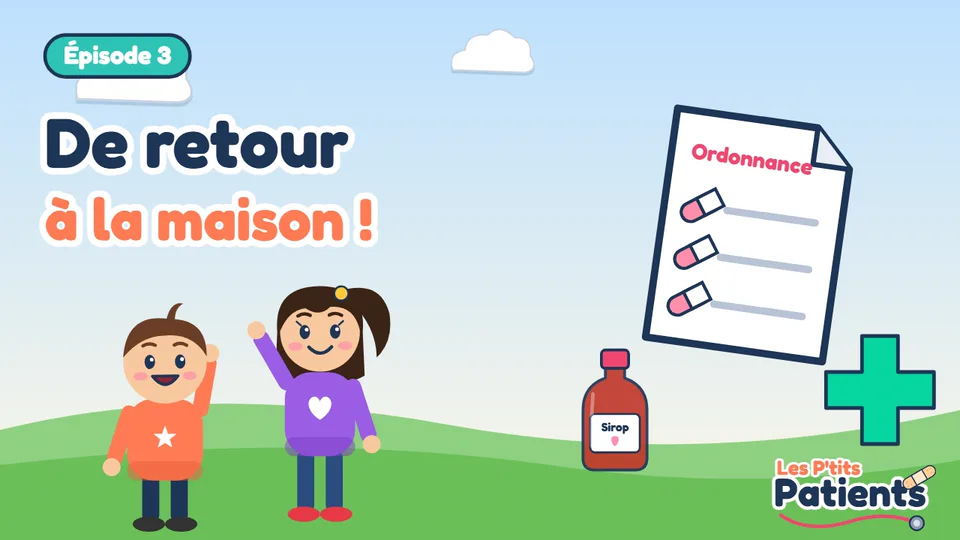
✓ Déjà vuOrdonnance, pharmacie et repos
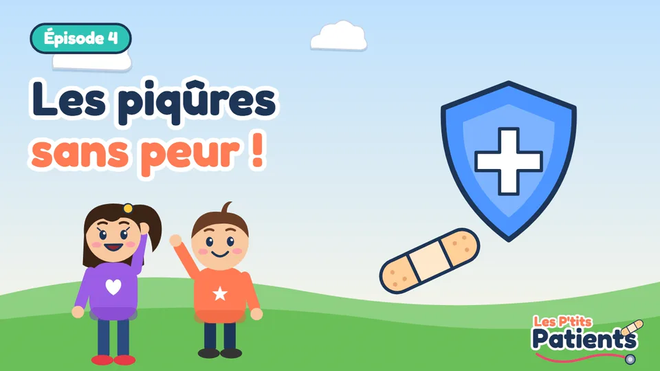
✓ Déjà vuVaccins et prise de sang
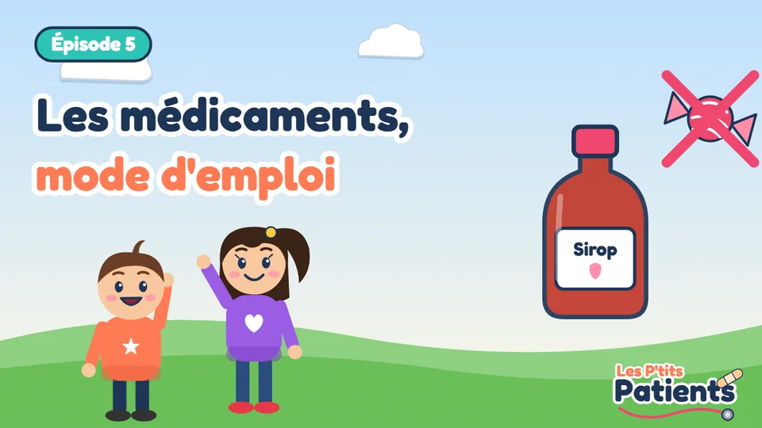
✓ Déjà vuPas des bonbons !
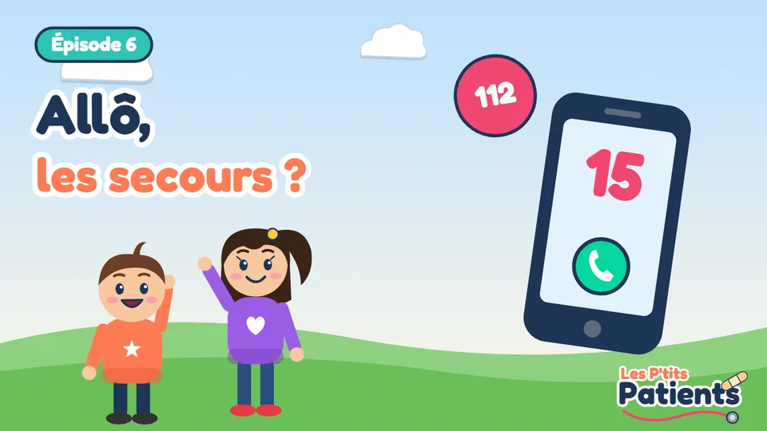
BientôtSavoir appeler le 15 ou le 112
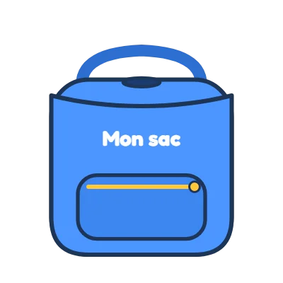
Glisse dans le sac tout ce qu'il faut pour aller chez le médecin… et pas le poisson rouge !
Stéthoscope, otoscope, toise… Sais-tu à quoi sert chaque instrument du médecin ?
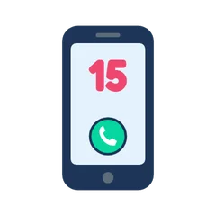
15, 17, 18, 112 : sais-tu quel numéro appeler, et quoi dire au téléphone ?
La checklist « Prêt pour le médecin ! », les fiches mémo, les numéros d'urgence, des coloriages et ton diplôme.

Le petit frère. Curieux comme tout, il pose toutes les questions… même les plus rigolotes !
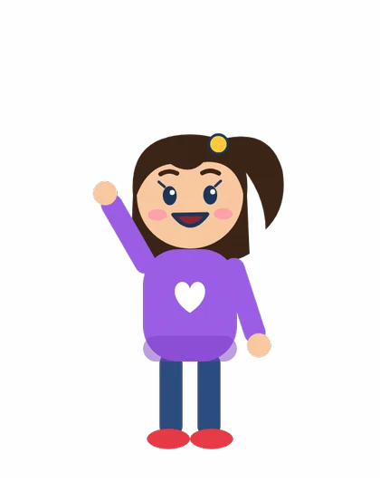
La grande sœur. Elle adore les « Le savais-tu ? », et aide Léo à se préparer.
Il ne parle pas, mais il montre tout : ses instruments, ses gestes, et ce qu'il faut faire.
On ne la voit pas, mais on l'entend dans chaque vidéo : Dr Sophie Lefevre est pédiatre depuis 30 ans. Elle raconte les histoires de Léo et Inès, et relit chaque conseil pour qu'il soit juste et adapté aux enfants.